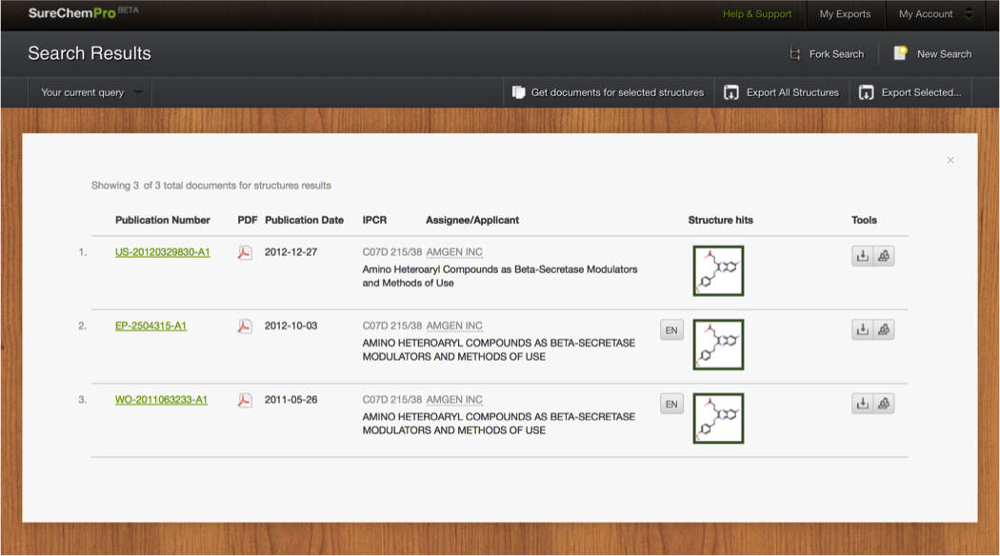
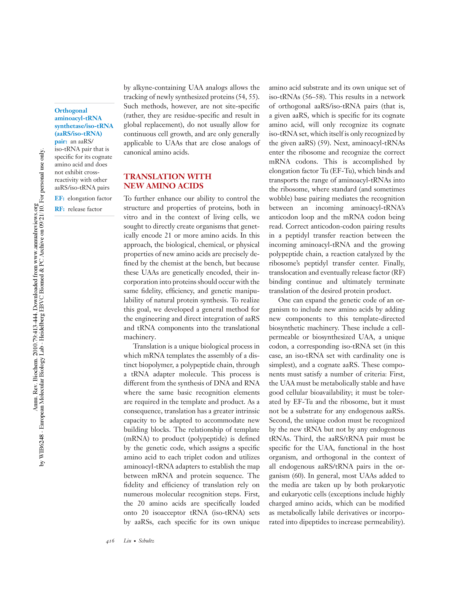
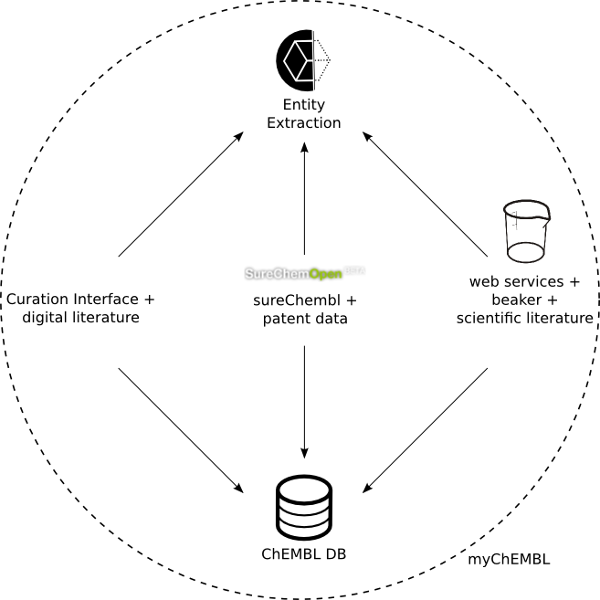

SureChEMBL
An open system for exploration of patent chemistry space
Michał Nowotka
ChEMBL Group
EMBL-EBI
EMBL-EBI Resources
Genes, genomes & variation
European Nucleotide Archive
Ensembl
European Genome-phenome Archive
1000 Genomes
Ensembl Genomes
Metagenomocs portal
Gene, protein & metabolite expression
ArrayExpress
Expression Atlas
Metabolights
PRIDE
Protein sequences, families & motifs
InterPro
Pfam
UniProt
Molecular structures
Protein Data Bank in Europe
Electron Microscpoy Data Bank
Chemical biology
ChEMBL
ChEBI
Systems
BioModels
BioSamples
Enzyme Portal
Drug discovery takes time
- From discoverig a target to a drug reaching the market:
12 years - Bioinformatics shortens time to target discovery
- EMBL-EBI services support all stages of drug discovery
ChEMBL - Data For Drug Discovery
Patent Data
- Do we include patent data in the ChEMBL database?
- We do provide cross-references (UniChem), but not the underlying chemical data.
- Most common question asked about ChEMBL during training and outreach.
- Why is this so important to Drug Discovery researchers?
- Patent literature 2-3 years ahead of published literature.
- Prior art and freedom to operate.
- Lots more data - but high cost to extract + lots of noisy data.
SureChem = SureChEMBL
- December 2013 EMBL-EBI acquired SureChem - a leading 'chemistry patent mining' product from Digital Science, Macmillan Group
- SureChem provides a live (updated daily) view chemical patent space
- EMBL-EBI will rovide an ongoing, free and open resource to entire community
- Rebranded SureChEMBL
SureChEMBL System
SureChEMBL System

SureChEMBL System

SureChEMBL System

SureChEMBL System
SureChEMBL Data Processing
Technical Challenges
Enhanced Entity Extraction
- Identify new entity types e.g. proteins, diseases, cell lines, assays
- Bioactivity Data Extraction
- Markush Structure Extraction
- Image Processing
Entity Extraction
Bioactivity Data Extraction
Markush Structure Extraction
Curation Interface
- Load compounds to DB, calulate properties
- Web based application to help scientific curators
- High level graphical intrface, no more SQL
- Handling many input formats
Curation Interface
handling different file formats
Curation Interface
handling different file formats
Curation Interface
handling different file formats
Curation Interface
handling different file formats
Curation Interface - image extraction
Curation Interface - PDF extraction
Curation Interface - PDF extraction
Curation Interface - PDF extraction
Image segmentation - compound extraction
Image segmentation - compound extraction
Image segmentation - layout detection

Image segmentation - layout detection
Entity classification
- How to train classifier?
- SureChEMBL patent data?
ChEMBL Web Services
- Only data
- Lack of compound manipulation services
Open source solution - Beaker

- Server platform and virtual chemistry container
- Provides cheminformatics tools
- REST-like HTTP API
- Easy to use from any programming language
- Install Beaker on one machine instead of installing RDKit on many hardware/software configurations
Open source solution - Beaker
Trivial installation:
pip install rdkit
Beaker code is available as github repository:
https://github.com/mnowotka/chembl_beaker
git clone https://github.com/mnowotka/chembl_beaker.git
Beaker - features
- Format conversion
- 2D/3D compound rendering
- Compound regognition (OSRA)
- Fingerprints, descriptors
- Marvin 4 JS compilant webservices
Beaker - features
Beaker - features
Potential use cases
- Access from languages like java script, ruby
- Web applications
- Mobile apps (camera + OSRA + RDKit)
- Small desktop apps (clippy)
- Marvin Backend
- Part of new web services
Potential use cases
myChEMBL
- Virtual Machine
- Contains open data and cheminformatics tools
- Self contained web interface
- Complete and free
- Easy to install
myChEMBL LaunchPad
Available on github:
https://github.com/chembl/mychembl
myChEMBL - contents
- ChEMBL DB (Postgres + RDKIt Cartridge)
- Web interface
- RDKit toolkit
- Web services + client software
- Scientific python tools (numpy/scipy etc.)
- ipython server with many useful notebooks
- OSRA
- Beaker
myChEMBL - deployment options
- ISO image from FTP + VirtualBox
- vagrant init chembl/myChEMBL && vagrant up
- bootstrap.sh + bare metal machine
Overview

Thank you!
Questions?